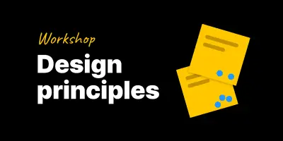
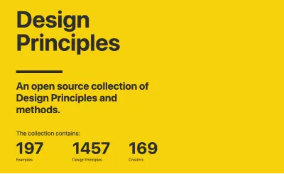
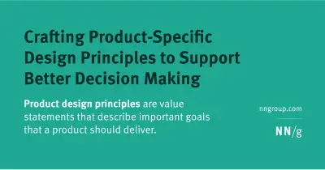
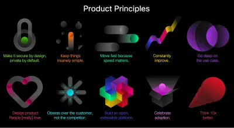

Design & product principles
Design Principles are a set of guidelines that empower a team to make wise decisions and appropriate trade-offs when designing, building and innovating.
Organisations, individuals, design system and product teams have benefited from writing and following their principles.
Figma workshop template

Design principles help align your team to a vision for what makes quality design.
A Figjam template for a 1.5 hour group workshop. It will get you to agree on a set of principles you can use to increase quality of work and speed up decision-making
An open source collection of design principles and methods

An open source collection of Design Principles and methods.
Nielsen Norman Group guide to help creating your project's design principles

An indepth article from Nielsen Norman group on crafting Product-Specific Design Principles to Support Better Decision Making
In depth exploration of how Slack apply product principles. By their VP of Product Design Ethan Eismann.
Product principles 101. How they're used at Cisco. - missing link

Product Principles are statements of your core values that allow cross-functional teams to evaluate work, and make better, more autonomous decisions. Some examples from Cisco.
Empathy, ingenuity, and a willingness to embrace imperfection
This video from Config 2025 doesn't sit neatly in any category but needs to be captured as a great example of what Product Design is. I've placed it here as the core message is one of: understanding the primary need of your users, how the product serves that need and how you set priorities on the project to deliver on that need above and beyond anything else.